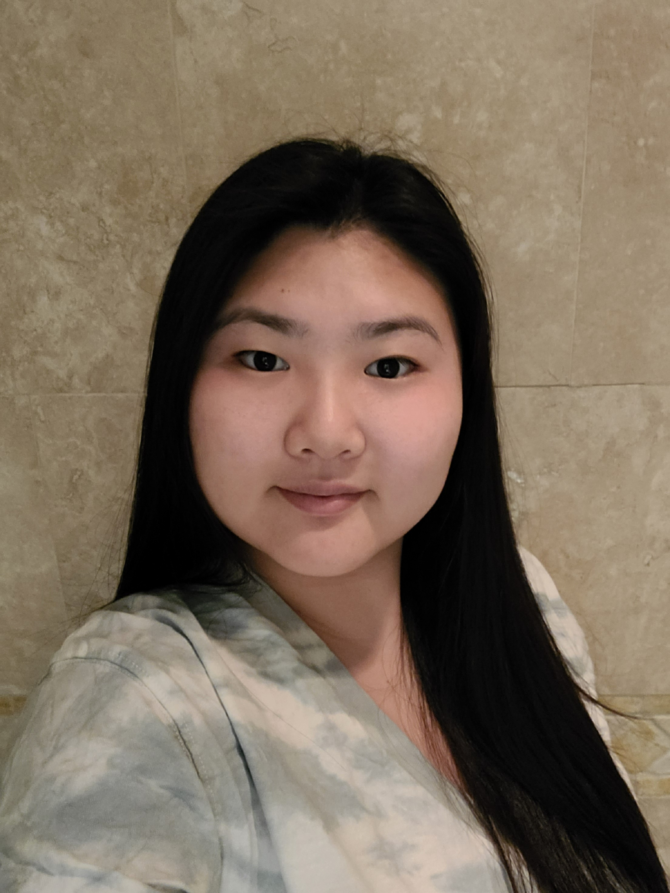

Min Jung's Portfolio
This is Min Jung's portfolio.
About Me
My name is Min. I am 19 years old. I was born and raised in Los Angeles, California to Korean immigrant parents. I have a sister who is a year older than me and 5 years younger brother, making me the middle child. From childhood till the present, I enjoy participating in sports such as Tae Kwon Do, volleyball, tennis, badminton, table tennis, and softball. I like trying various sports; however, I'd prefer if the activities were indoors. Despite living in Southern California since birth, I do not like the heat. I believe that the perfect temperature is 72 degrees Fahrenheit! Nevertheless, this summer I'd like to try learning how to surf!
A question I find embarrassing or cautious to answer is "Did you learn how to play an instrument?". The reason being is because I definitely did learn but I can not play it. Coming from an Asian family, learning the piano was one the must to-dos as a child. I took piano lessons for 6 years and for the life of me, I still can not read the music notes. It is safe to say I never got passed the beginner's books. It's crazy but I was really doing my best to survive the lessons and get my candy at the end. In the end, the candy was more important than the piano to me. I also learned the cello; however, that had the same ending as the piano. But, now I am interested in the guitar, especially the classical guitars, and want to learn to play. Maybe third time is the charm and now that candies are not that important to me
Currently, my family and I reside in Northridge which is in the San Fernando Valley. Although Cal State Northridge is closer to home, I decided to attend Cal Poly Pomona to avoid going to the same school as my older sister again and to gain some independence. Currently, I am an incoming junior studying Computer Science aiming to graduate in Spring 2024. While my first year and a half of my college experience were online, I tried to experience the most by taking all the opportunities I can. I joined the club sheCodes and became the treasurer for 2021-2022 and now the elected vice president for 2022-2023. While in the club, I participated in 2 Semester Long Projects (SLP), and 2 outreach programs, Future Women Developers Conference. I also joined side projects such as the Northrup Grumman Collaboration Projects, Big Data and Cloud Computing Apprenciship(BDCC), STARs Research project, Target Women in Tech Symposium Hackathon, etc.
For the 2022-2023 school year, I will be studying abroad at Yonsei University in South Korea. While at Yonsei, I will continue studying computer science and also improve my Korean language skills. As I advance my knowledge academically, I will also experience a step-up of my independence and learn how to navigate to survive in a new living condition for a year. My goal for next year is to become a more knowledgeable person both in my academic area and personal life! Especially my personal life, because I still feel like I have not grown much since high school (when covid started).
Anywhoo, thank you for reading my about page and hope that you learned one or two things about me!
Connect with me on:
Click here to see the list of projects I have worked on.
Click here to see more pictures of me!
Click here to get a random quote from my favorite TV show Modern Family: